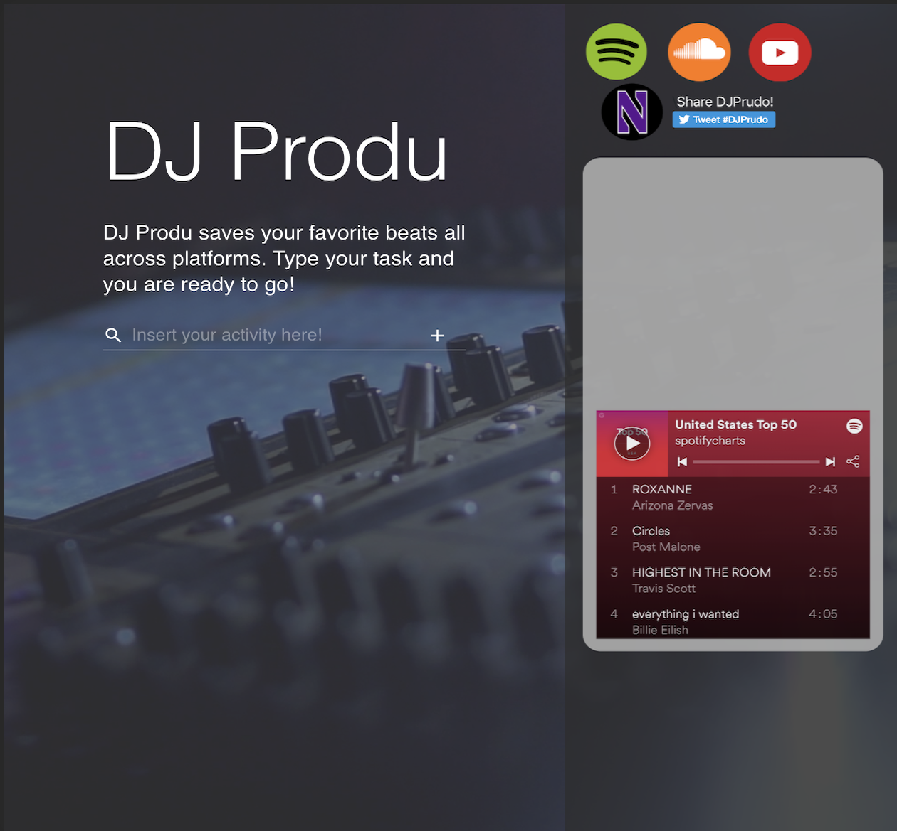
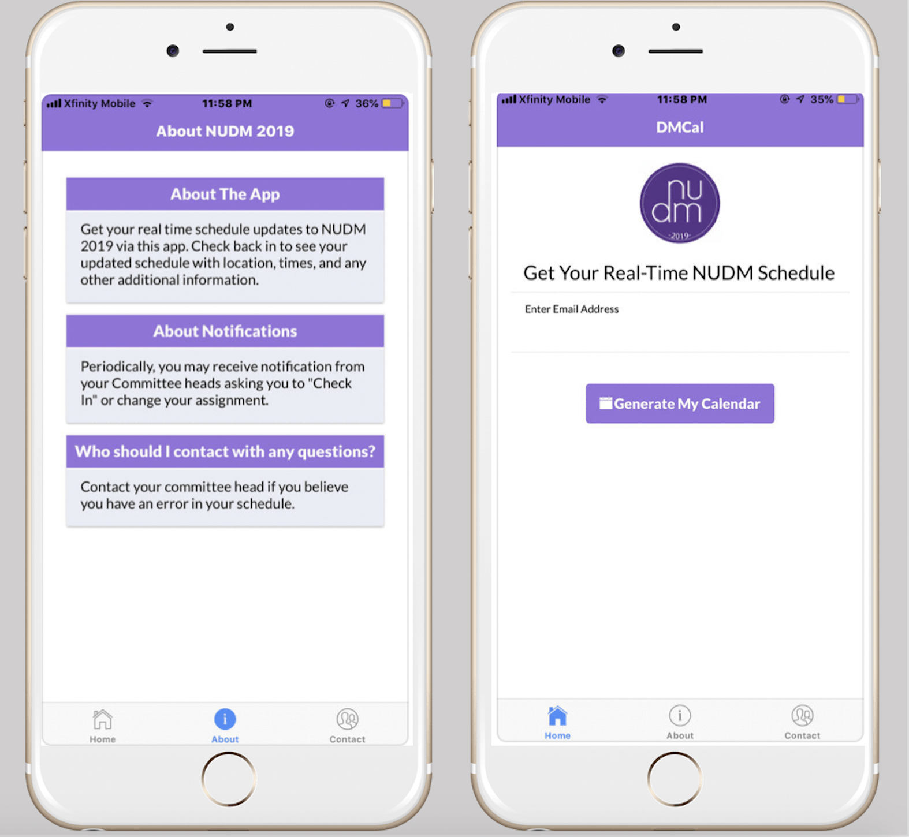
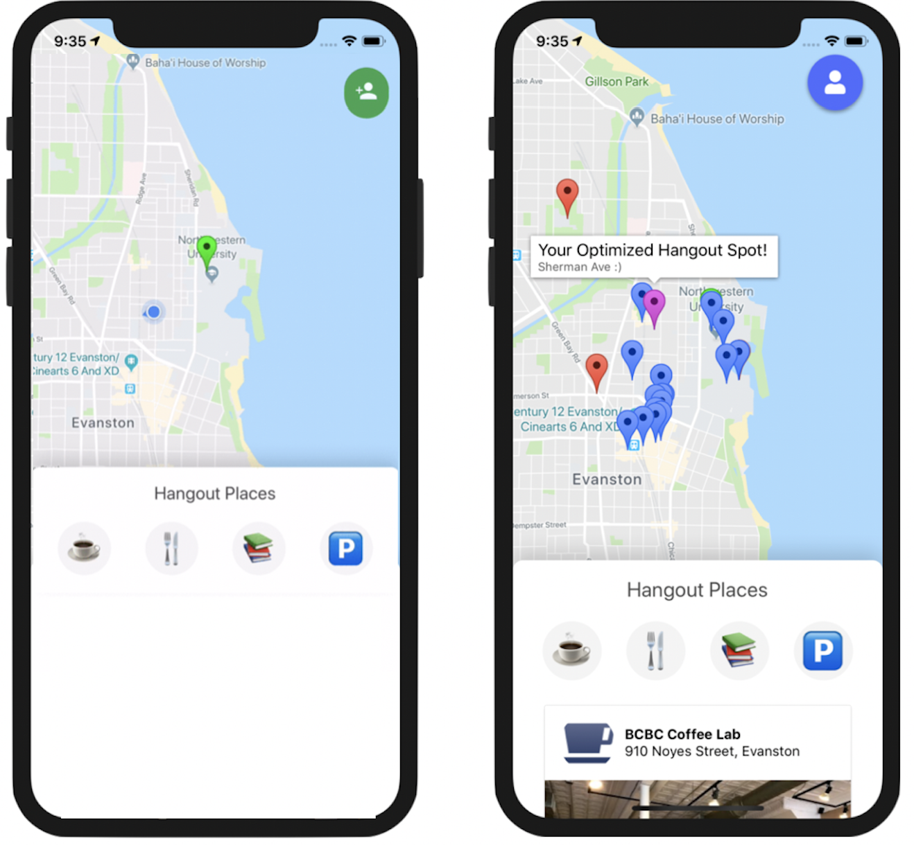
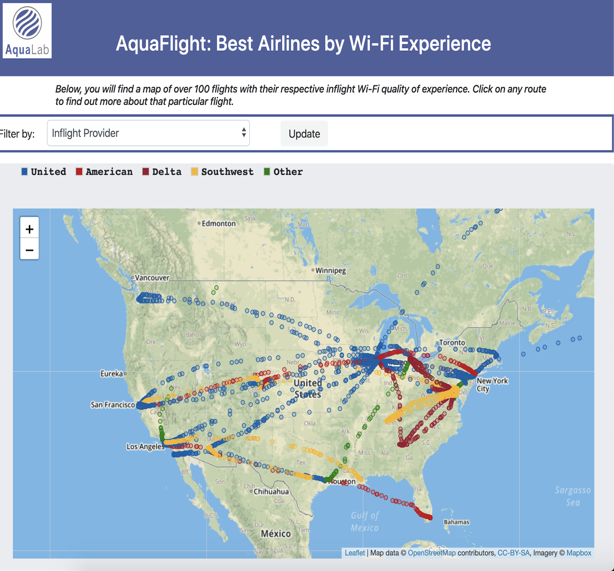
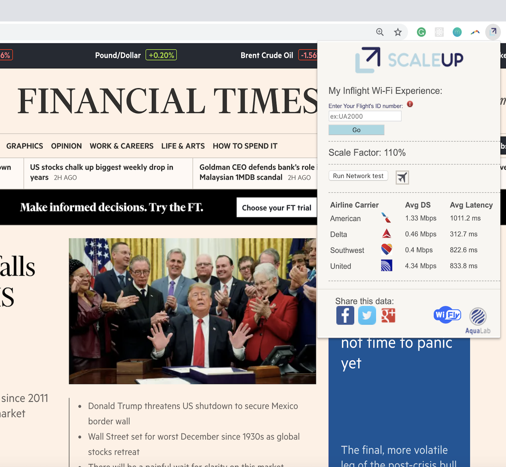
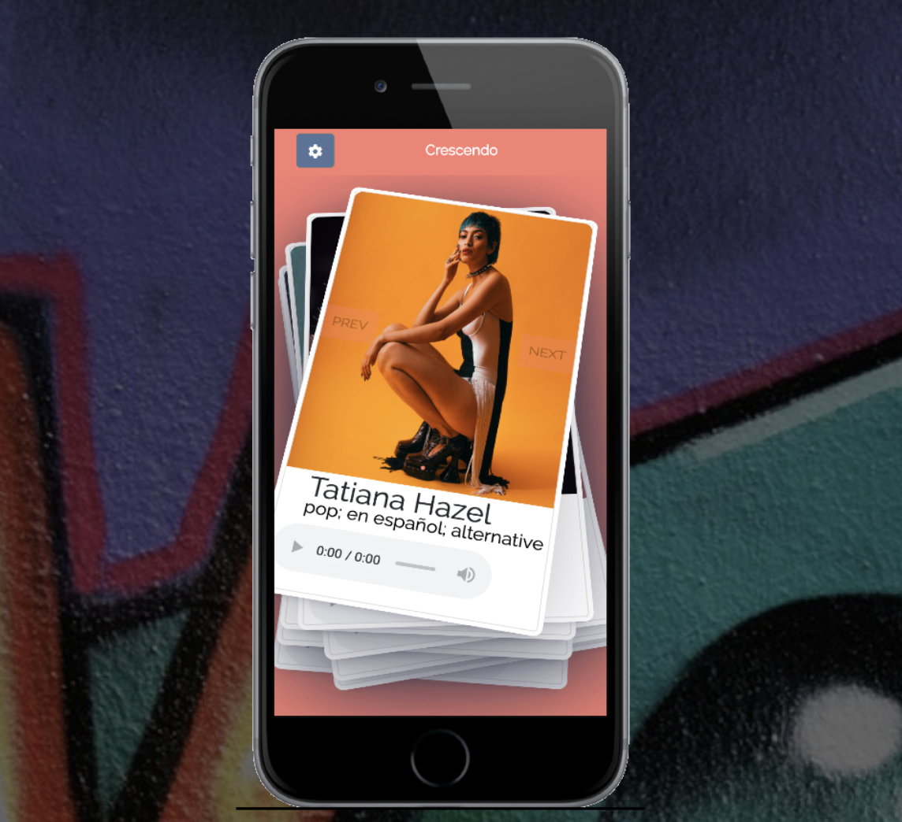

Hello Everybody, i am
Robbie Belson
I'm a passionate distributed systems enthusiast, cloud engineer, and classical guitarist from Washington, D.C.
As a distributed systems engineer and solutions architect, I design and build production-scale AI and edge computing infrastructure at Amazon Web Services (AWS). My work centers on deep infrastructure challenges: from GPU orchestration across distributed Kubernetes clusters (EKS on Outposts, Hybrid Nodes, Local Zones) to architecting hybrid Retrieval-Augmented Generation systems that span cloud and edge. I specialize in the foundational layer where networking, compute scheduling, and distributed AI inference converge, enabling startups and enterprises alike to deploy latency-sensitive workloads at planetary scale.
With a Master's in Computer Science focused on Networks and Distributed Systems from Northwestern University, I've contributed to academic research on web performance optimization and hold three patents in cellular network energy modeling, location-based access control, and geographic traffic restriction systems. Prior to AWS, I led Verizon's Developer Relations team focused on mobile edge computing and conducted distributed systems research at Northwestern's AquaLab, focusing on network optimization in challenging environments.
I'm passionate about solving hard infrastructure problems — whether that's optimizing network packet flows, designing resilient distributed architectures, or enabling GPU workload orchestration across hybrid cloud environments — and sharing these solutions through open-source contributions or AWS On Air, AWS' flagship weekly show where we reach millions of developers each year.
Total Patents
Erdős Number
Dec 2023 - Present
Senior Solutions Architect
Jul 2022 - Dec 2023
Solutions Architect, AWS Industries
Mar 2022 - Aug 2022
Technical Advisory Board Member
Oct 2019 - Jul 2022
Principal Engineer, Corporate Strategy
Oct 2018-Jun 2019
Network Architect
Mar 2017-Jun 2019
Researcher
Sep 2018-Jun 2019
Northwestern University
Sep 2015-Jun 2019
Northwestern University
Sep 2015-Jun 2019
Northwestern University
A selection of previously developed web, mobile, and chrome applications.


Music-matching app by activity


Participant scheduling app


Hangout spot recommendation app


Inflight Wi-Fi QoE Visualization


Browser extension to improve perceptual web QoE


Music Discovery Platform
A selection of my awards, achievements, and publications.